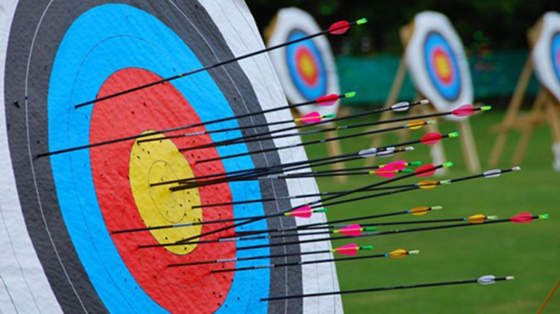
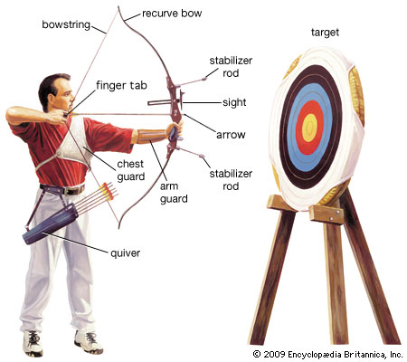
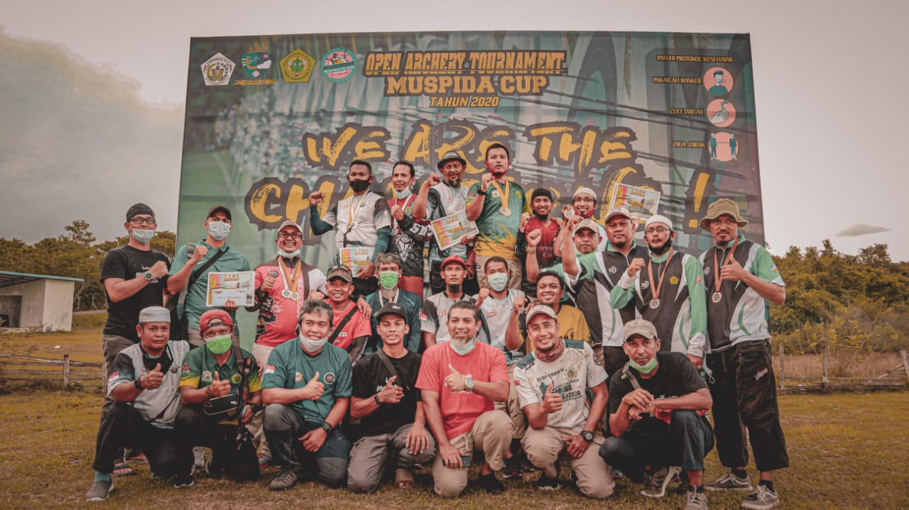

Pengertian

Panahan adalah suatu kegiatan menggunakan busur panah untuk menembakkan anak panah. Bukti-bukti menunjukkan bahwa sejarah panahan telah dimulai sejak 5.000 tahun yang lalu yang awalnya digunakan untuk berburu dan kemudian berkembang sebagai senjata dalam pertempuran dan kemudian sebagai olahraga ketepatan. Seseorang yang gemar atau merupakan ahli dalam memanah disebut juga sebagai pemanah.
Kenapa Harus Memanah

Panahan merupakan salah satu cabang olahraga terukur yang paling trend dan favorit di Indonesia. Perkembangan olahraga panahan di Indonesia saat ini sangat signifikan dikarenakan beberapa factor salah satunya, panahan merupakan salah satu olahraga sunnah yang dianjurkan untuk umat Islam.
Ajarilah anak-anak kalian berkuda, berenang, dan memanah,” (HR Bukhari, Muslim). ”Lemparkanlah (panah) dan tunggangilah (kuda).” (HR Muslim).
Dari hadits tersebut, terlihat dengan jelas bahwa memanah memiliki kaitan yang sangat erat dengan peradaban Islam.
Manfaat Memanah
Meningkatkan koordinasi tangan dan mata, serta keseimbangan.
Meningkatkan fleksibilitas tangan dan jari.
Membangun kekuatan tubuh.
Meningkatkan kesabaran.
Meningkatkan fokus.
Membangun kepercayaan diri.
Merupakan olahraga sosial.
Merupakan bentuk latihan kebugaran.
Merelaksasi tubuh.
Merupakan olahraga yang dapat dimainkan semua orang.
Dokumentasi kegiatan

